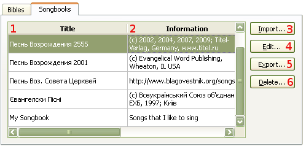
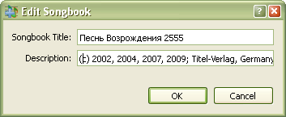

Справочник по СофтПроектору


4.2 Managing Songbooks
Для управления модулями сборников:
При этом открывается диалоговое окно
в котором происходит управление. Клавиши: Crtl+M
Софт Проектор может вмещать сколько угодно сборников,
а также позволяет их импортировать, редактировать, экспортировать и удалять.

Здесь показаны все сборники, имеющиеся в базе данных программы.
Краткие детали о сборниках
Ввод в программу новых сборников.
В появившемся диалоговом окне можно изменять название и информацию о сборниках.

Извлечение сборника из базы данных для передачи в пользование. Настоятельно рекомендуется сделать резервные копии сборников
перед установкой новой версии программы.
Удаляется сборник не нужный более для употребления. Если в базе данных останется только один сборник, его удаление будет невозможно.